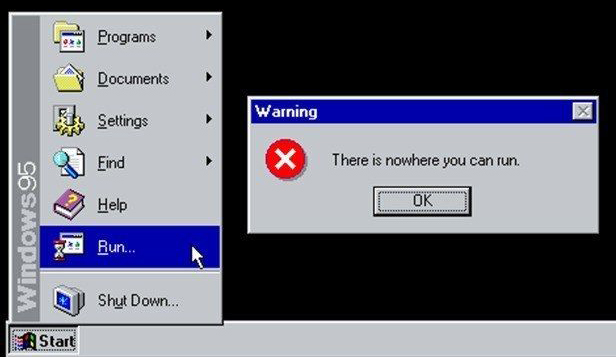
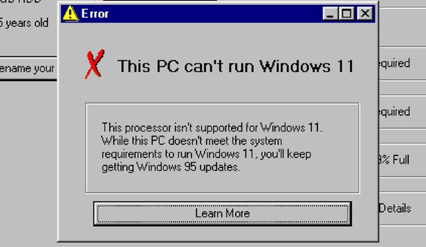
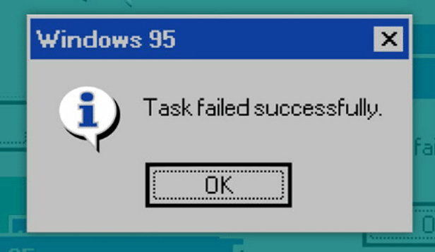
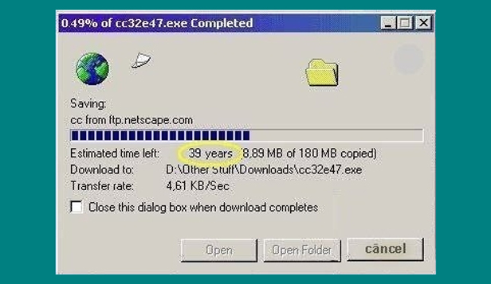

This is what your mentor would tell you if you tried to leave RSS course
Sorry, no Windows 11 for you :(
Do you also feel this after every crosscheck submit?
I spent about this much time to pass Media-queries test...